Nati Ofir
PhD StudentDepartment of Mathematics and Computer Science
Weizmann Institute of Science
Rehovot, Israel
E-mail : yehonatan.ofir@weizmann.ac.il
Research Interests
- Computer Vision
- Image Processing
- Machine Learning
Faint Edge Detection in Noisy Images
My M.Sc. Thesis: "Efficient Bayesian Detection of Faint Curved Edges in Noisy Images", PDF, POSTER1, POSTER2.
Source code of my edge detection solutions:
- Faint Staight Edges (Fast), implementation of Galun et al, ICCV 2007, PDF.
- Faint Curved Edges
- Faint Curved Edges with Shape Score (Recommended)
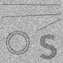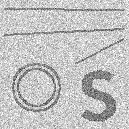 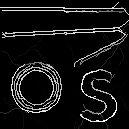
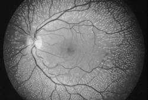 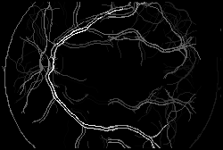 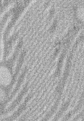 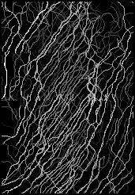 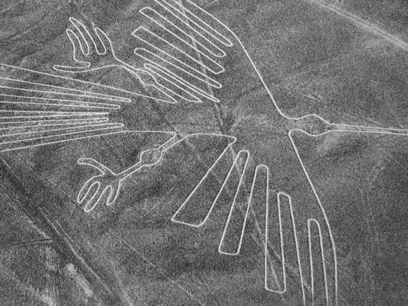 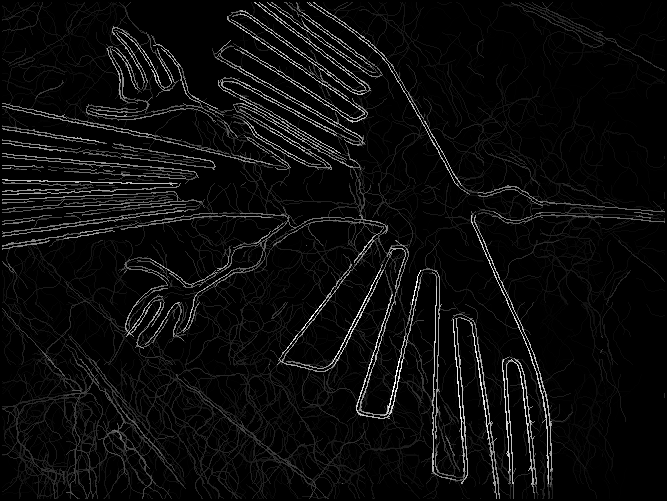 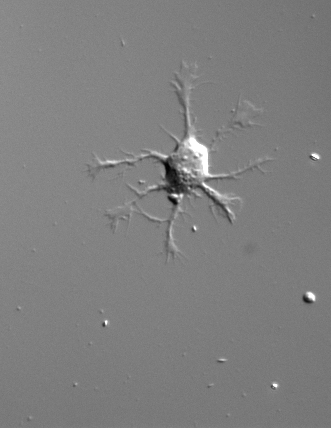 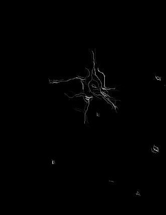
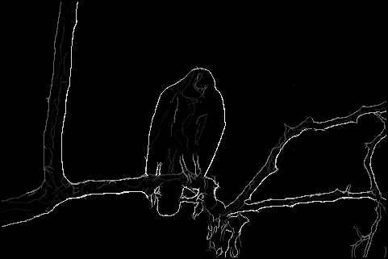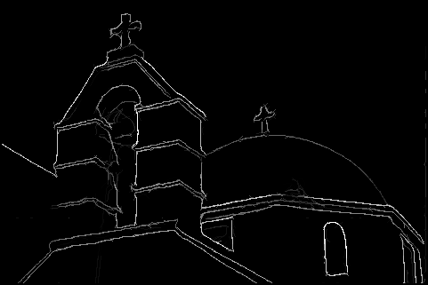 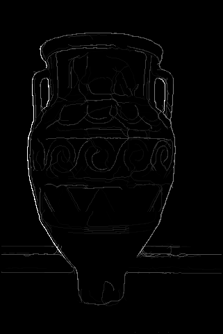 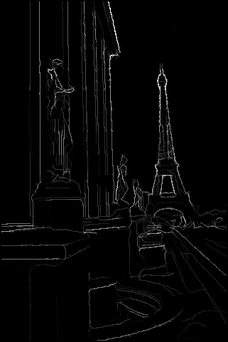
Teaching
- Information Theory (TA), Weizmann Institute, Spring 2013.
- Introduction to Image Processing, The College for Academic Studies, Summer 2013.